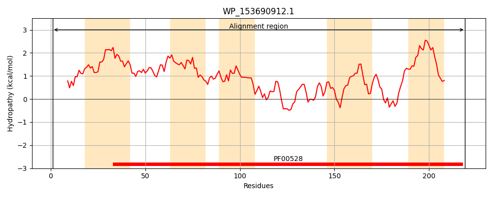
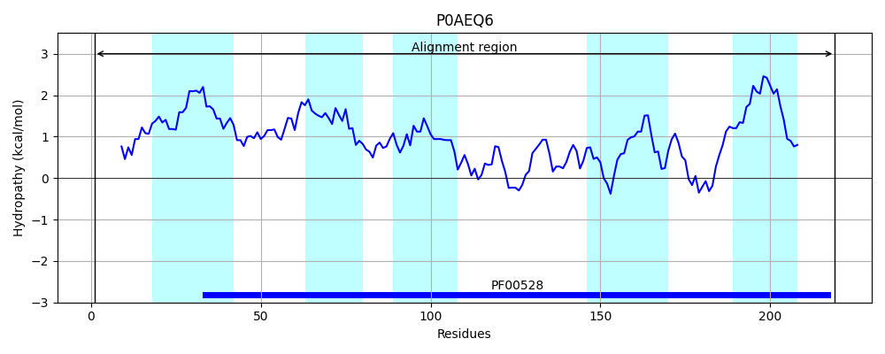
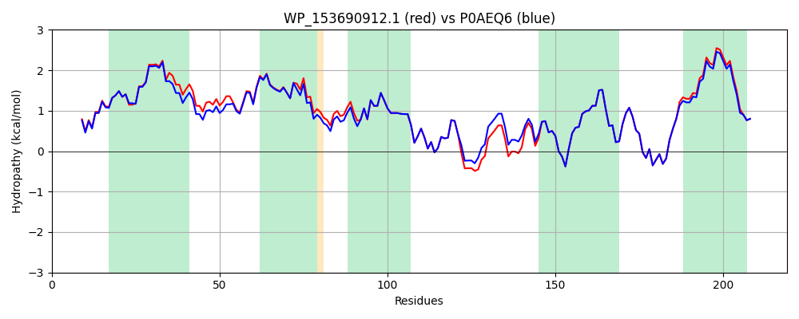

Hit Accession: P0AEQ6
Hit TCID: 3.A.1.3.2
Hit Description: gnl|BL_ORD_ID|8788 gnl|TC-DB|P0AEQ6|3.A.1.3.2 Glutamine transport system permease protein glnP - Escherichia coli.
Mach Len: 219
e:0.000000
Query TMS Count : 5
Hit TMS Count: 5
TMS-Overlap Score: 5.400000
Predicted Substrates:CHEBI:5432;glutamine
BLAST Alignment:
Score: 1036 , Bit scores: 403 bits, E-value: 2.1e-145, Alignment length: 219, Percentage identity: 94
Query: 1 MQFDWSAIGPAIPILLEGAKMTLWISVLGLAGGLIIGLVAGFARCFGGWIANHIALVFIEIIRGTPIVVQVMFIYFALPMAFSDLRIDPFSAAVVTIMINSGAYIAEITRGAVLSIHKGFREAGLALGLSRRETIRHVILPLALRRMLPPLGNQWIISIKDTSLFIVIGVAELTRQGQEIIAGNFRALEIWSAVAVIYLIITLVLSFILRRLERRMKIL 219
MQFDWSAI PAIP+L+EGAKMTLWISVLGLAGGL+IGL+AGFAR FGGWIANH+ALVFIE+IRGTPIVVQVMFIYFALPMAF+DLRIDPF+AAVVTIMINSGAYIAEITRGAVLSIHKGFREAGLALGLSR ETIR+VILPLALRRMLPPLGNQWIISIKDTSLFIVIGVAELTRQGQEIIAGNFRALEIWSAVAV YLIITLVLSFILRRLERRMKIL
Sbjct: 1 MQFDWSAIWPAIPLLIEGAKMTLWISVLGLAGGLVIGLLAGFARTFGGWIANHVALVFIEVIRGTPIVVQVMFIYFALPMAFNDLRIDPFTAAVVTIMINSGAYIAEITRGAVLSIHKGFREAGLALGLSRWETIRYVILPLALRRMLPPLGNQWIISIKDTSLFIVIGVAELTRQGQEIIAGNFRALEIWSAVAVFYLIITLVLSFILRRLERRMKIL 219 | Protein Hydropathy Plots: |
|---|
|  |  |
Pairwise Alignment-Hydropathy Plot:
|
|---|
|  |